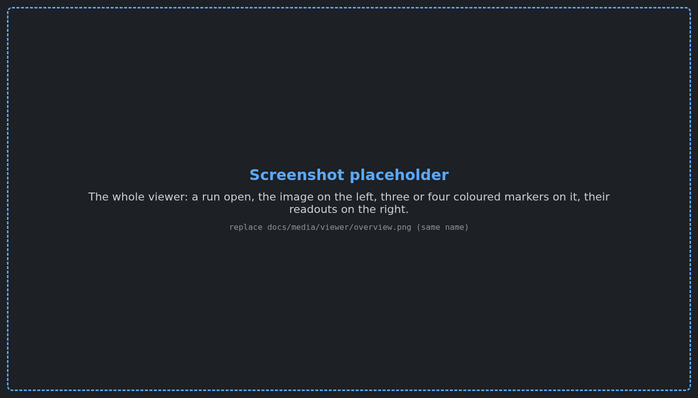
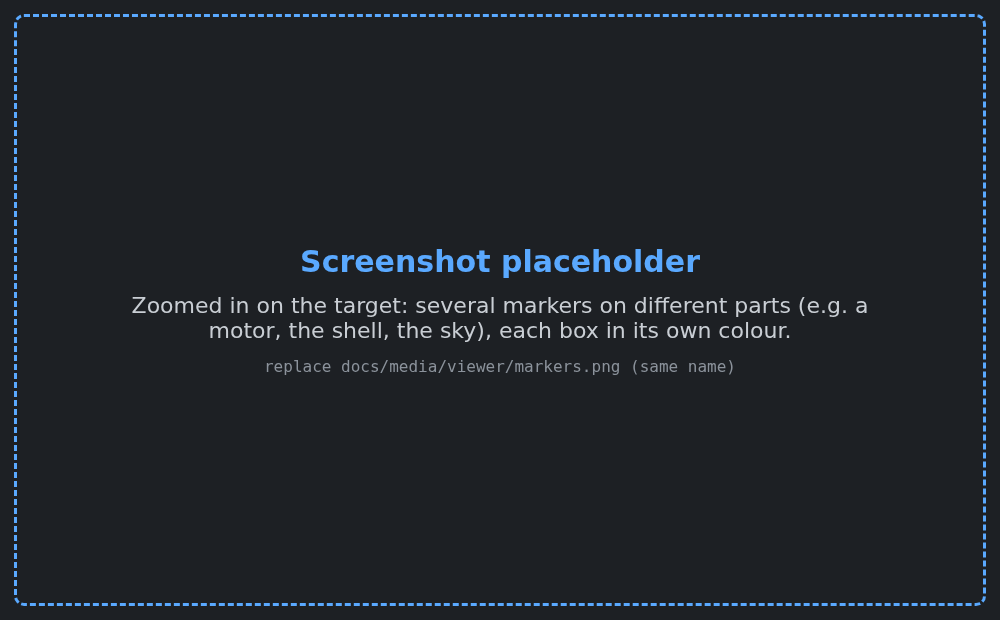
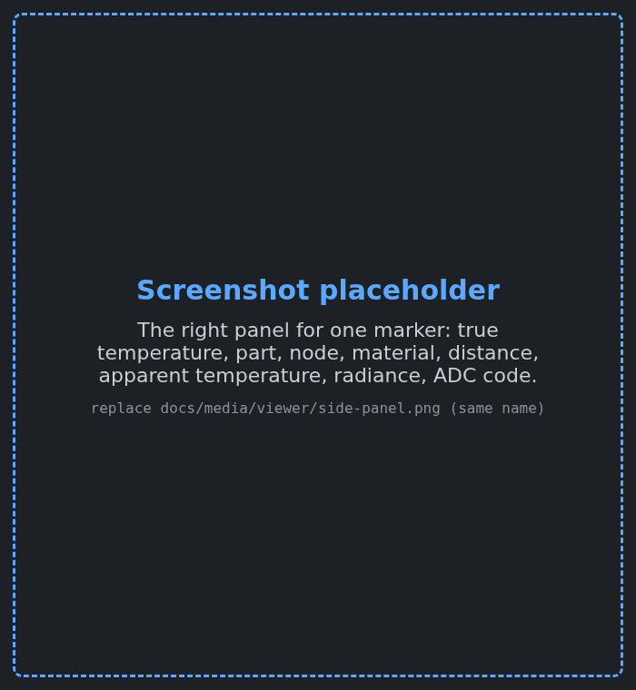
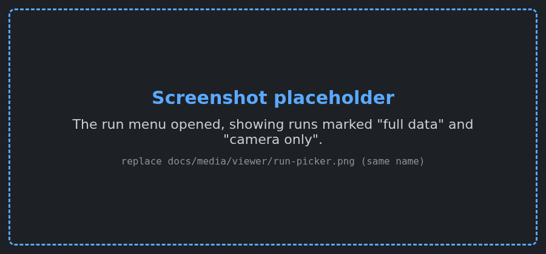
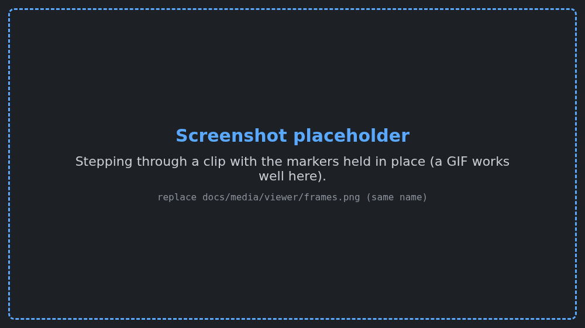

Open a rendered frame, click on it, and see what is really at that pixel: the true surface temperature, which part it is, how far away it is, and what the camera measured there. Use it to debug a render. When a motor looks too cold or the sky too bright, click it and compare the numbers.

Start it#
From the repository folder:
make viewerYour browser opens on the viewer. That is all. It finds the right Python by itself and needs nothing installed beyond what the project already uses. Stop it with Ctrl+C in the terminal.
To open one render, or a different folder of renders:
make viewer RUN=outputs/phantom4_perpart_truthIf the browser does not open, go to the address the terminal prints, normally http://127.0.0.1:8765/.
Use it#
- Pick a run from the menu at the top left. The newest run is listed first.
- Click the image. A coloured marker appears with a small box beside it. The panel on the right lists everything saved for that pixel.
- Click again for another marker, in another colour. Add as many as you need to compare points, for example a motor, the shell and the sky behind them.
- Remove a marker with its × in the right panel, or remove them all with clear all.
- Move through a clip with ◀ ▶, the slider or the arrow keys, or press play. The markers stay where you put them and their numbers update for each frame.

| Do this | To |
|---|---|
| click | add a marker |
| drag | move the image |
| mouse wheel | zoom in and out |
| f | fit the image to the window again |
| ← / → | previous / next frame |
| space | play / pause |
| h or ? help | show the instructions in the right panel |
The image menu changes what you look at: the camera's display image, the visible-light companion, or any saved data plane drawn in gray. A click always reads every plane, whichever one is on screen.
To share a view, copy the address bar. The link reopens the same run and frame with the same markers.
What the numbers mean#

| Row | What it is |
|---|---|
temperature_k | The true surface temperature at the pixel's centre, as the thermal model computed it. For the sky, the sky's apparent temperature. |
apparent_t | The temperature the camera reports. It differs from the true value because of emissivity, reflected sky, the atmosphere and lens blur. That difference is often exactly what you are debugging. |
part_id | Which part of the model the pixel belongs to, for example motor_rear_left. (sky / no geometry) means the ray hit nothing. |
node_id | Which thermal node heats that part. The row below it gives that node's temperature from the frame's metadata. |
material_id | The material, for example aircraft_aluminium_painted. |
distance_m | Distance from the camera, in metres. Empty (nan) for the sky. |
radiance | The in-band radiance reaching the camera. |
dn16 | The raw number the camera's ADC produced. |
display8, rgb | The pixel's colour in the display image and in the visible-light companion. |
The panel shows temperatures in both kelvin and °C. The frame metadata section at the bottom lists the frame's own facts: time, range, and every node's temperature.
At edges, true and apparent temperature disagree on purpose. A pixel on an object's outline sees part object and part sky. The camera value mixes them, while the true value describes only the point at the pixel's centre.
Runs marked "camera only"#

The run menu marks each run full data or camera only. A camera-only run was rendered before frames saved the scene truth. It still opens and a click shows what the camera measured, but not the true temperature, part or distance. Render it again with any of the render scripts to get full data (ADR 0154).
Clips#

A clip shows only the frames whose data was saved. If a render thinned its saved frames with --plane-stride 8, the viewer shows every 8th frame and says every 8th next to the frame name.
When something is off#
| You see | Why | What to do |
|---|---|---|
| A yellow warning on a marker | One saved plane has a different size from the image, so the pixel had to be estimated. | Treat that row with care. The other rows are exact. |
| "Camera data only" banner | The run predates the truth planes. | Re-render it, or pick a run marked full data. |
viewer: no Python here can import irsim_viewer | No interpreter with NumPy and PyYAML was found. | Run make viewer PYTHON=/path/to/IsaacSim/.../python.sh. |
| "Address already in use" | A viewer is already running. | Use the open tab, or start another with scripts/viewer.sh outputs --port 8766. |
For developers#
The viewer lives in src/irsim_viewer/ and reads files only through one interface, FrameSource in src/irsim_viewer/source.py. A new file type takes one registered reader. A different data layout, such as a Warp buffer dump, takes one new source class. The page and the server stay unchanged. The design and its trade-offs are in ADR 0154.